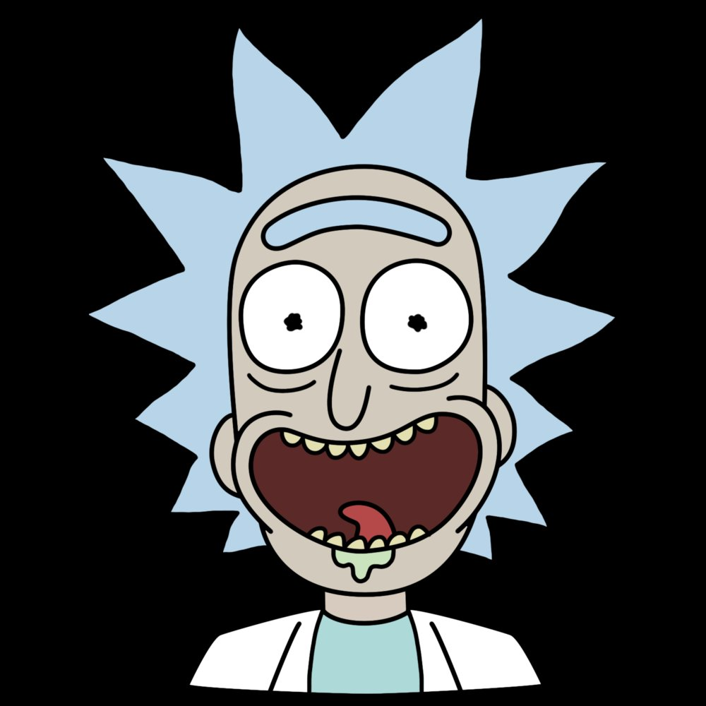

Morty… Moooorty… fais gaffe où tu mets les pieds. Si tu glisses encore, on finit dans une dimension où les croissants ont des jambes.
Aujourd'hui Rick a dit que la gravité "c'était chiant", donc il l'a désactivée. Jerry flotte au plafond depuis 2h. Personne n'a pensé à le décrocher.
Morty a demandé pourquoi il faisait toutes les missions dangereuses. Rick a répondu : "Parce que t'es le seul assez con pour survivre par accident."
Beth voulait un dîner normal. Rick a ramené 2 parasites cosmiques. Ils vivent ici maintenant.
Summer a ouvert une boutique de portails dimensionnels. Elle refuse tous les remboursements. Girlboss intergalactique.
Jour 1 — Rick voulait tester un réglage. Le portail s'est ouvert au mauvais endroit. Garage détruit, Morty traumatisé, Rick agacé.
Jour 2 — Le portail refuse de rouvrir. Rick prétend que c'est "volontaire". Morty n'y croit pas.
Jour 3 — Le portail refonctionne dans un supermarché bizarre. Tout est normal sauf les clients. Et les produits.
Jour 4 — Ils rentrent. Même canapé. Mauvaise timeline.
Jour 5 — Rick répare la Portal Gun. Morty note tout dans le carnet (mal).
Jour 9 — Sans prévenir : Rick est un cornichon. Morty ne pose même plus de questions.
Jour 15 — Ils rentrent enfin. Rick sourit. Mauvais signe.